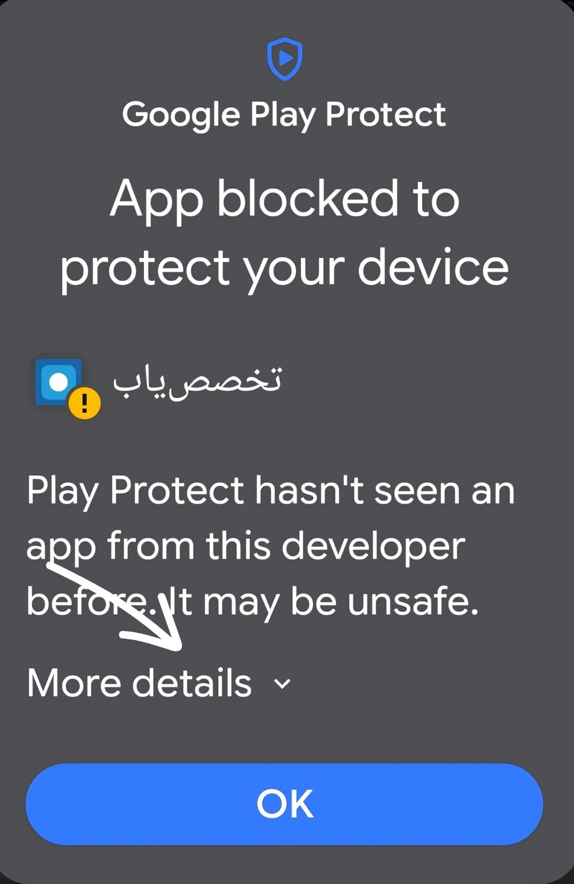
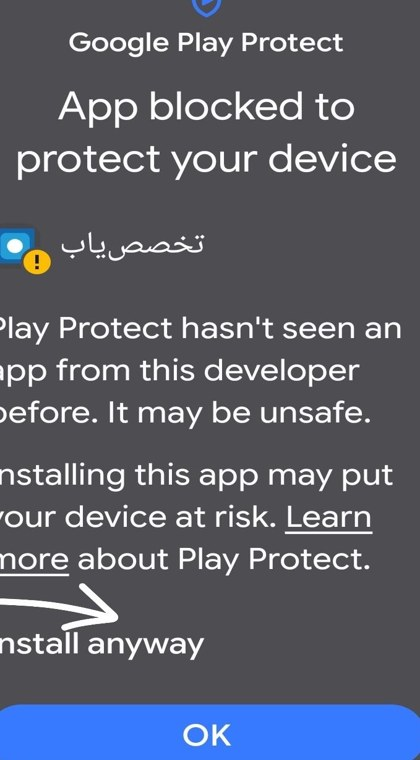

<!doctype html>
<html lang="fa" dir="rtl">
<head>
<meta charset="utf-8">
<meta name="viewport" content="width=device-width,initial-scale=1,viewport-fit=cover">
<title>نصب برنامه | تخصص‌یاب</title>
<meta name="description" content="تخصص‌یاب — ثبت رایگان آگهی استخدام و رزومه، با انتشار در کانال @JobVacencies">
<meta name="theme-color" content="#F5F4F1" media="(prefers-color-scheme: light)">
<meta name="theme-color" content="#0E0F10" media="(prefers-color-scheme: dark)">
<meta property="og:title" content="نصب برنامه | تخصص‌یاب"><meta property="og:description" content="تخصص‌یاب — ثبت رایگان آگهی استخدام و رزومه، با انتشار در کانال @JobVacencies"><meta property="og:image" content="https://takhassosyab.ir/icon-512.png">
<link rel="manifest" href="manifest.webmanifest">
<link rel="icon" href="icon.svg" type="image/svg+xml"><link rel="apple-touch-icon" href="icon-192.png">
<link rel="preload" href="assets/vazirmatn.woff2" as="font" type="font/woff2" crossorigin>
<link rel="stylesheet" href="assets/app.css?v=2610090127">
<script>try{var t=JSON.parse(localStorage.getItem('ty2_theme')||'null');if(t)document.documentElement.setAttribute('data-theme',t)}catch(e){}</script>
<script src="assets/data.js?v=2610090127" defer></script><script src="assets/core.js?v=2610090127" defer></script>
</head>
<body>
<main class="nonav"></main>
<script>document.addEventListener('DOMContentLoaded',function(){var TY=window.TY,$=TY.$;

TY.shell({brand:true, bell:false});
var deferred=null; window.addEventListener('beforeinstallprompt',function(e){e.preventDefault();deferred=e;var b=$('#pwa');if(b)b.hidden=false;});
$('main').innerHTML='<section class="hero" style="padding-top:20px"><span class="mark xl">'+TY.ic('mark')+'</span>'+
 '<h1 class="h1 mt4">تخصص‌یاب برای اندروید</h1><p class="muted mt2" style="max-width:36ch">آگهی‌ها و رزومه‌ها همیشه دم دستت؛ وقتی موردی در حوزه‌ی تو منتشر شود، روی گوشی خبرت می‌کنیم.</p>'+
 '<div class="stack mt6" style="max-width:420px"><a class="btn primary block lg" href="takhassosyab.apk" download>'+TY.ic('download','sm')+'دانلود برنامه (APK)</a><p class="xs faint center" style="margin:0">نسخه‌ی ۲ · حدود ۵۰ کیلوبایت · اندروید ۷ به بالا</p>'+
 '<button class="btn outline block" id="pwa" hidden>'+TY.ic('plus','sm')+'نصب نسخه‌ی وب روی صفحه‌ی اصلی</button><a class="btn ghost block" href="enter.html">بدون نصب، در مرورگر باز کن</a></div></section>'+
 '<div class="section-h"><h2>اگر اندروید هشدار داد</h2></div><div class="grid2">'+
 '<figure class="card" style="margin:0;padding:12px"><figcaption class="small mt2"><b>۱.</b> روی <b dir="ltr">More details</b> بزن</figcaption></figure>'+
 '<figure class="card" style="margin:0;padding:12px"><figcaption class="small mt2"><b>۲.</b> بعد <b dir="ltr">Install anyway</b></figcaption></figure></div>'+
 '<div class="banner mt4">'+TY.ic('info','sm')+'<div class="grow"><b>نسخه‌ی قبلی را نصب داری؟</b>نسخه‌ی جدید جدا نصب می‌شود و اعلان‌ها را حتی وقتی برنامه بسته است می‌گیرد. بعد از نصب، می‌توانی نسخه‌ی قدیمی را حذف کنی.</div></div>'+
 '<div class="section-h"><h2>آیفون</h2></div><div class="card flat small">در Safari دکمه‌ی اشتراک‌گذاری و بعد <b>Add to Home Screen</b> را بزن.</div>'+
 '<div class="section-h"><h2>لینک‌های کمکی</h2></div><div class="list">'+
 '<a class="row" href="https://arminia363.github.io/takhassosyab-backup/app.html"><span class="tile-ic">'+TY.ic('link','sm')+'</span><div class="grow"><div class="t">لینک پشتیبان</div><div class="s">اگر takhassosyab.ir باز نشد</div></div>'+TY.ic('external','sm chev')+'</a>'+
 '<a class="row" href="https://t.me/JobVacencies" target="_blank" rel="noopener"><span class="tile-ic">'+TY.ic('megaphone','sm')+'</span><div class="grow"><div class="t">کانال تلگرام</div><div class="s" dir="ltr" style="text-align:right">@JobVacencies</div></div>'+TY.ic('external','sm chev')+'</a>'+
 '<a class="row" href="'+TY.GROUP+'" target="_blank" rel="noopener"><span class="tile-ic">'+TY.ic('users','sm')+'</span><div class="grow"><div class="t">گروه گفتگو</div></div>'+TY.ic('external','sm chev')+'</a></div>';
$('#pwa').onclick=function(){if(deferred){deferred.prompt();deferred=null;this.hidden=true;}};

});</script>
</body>
</html>
